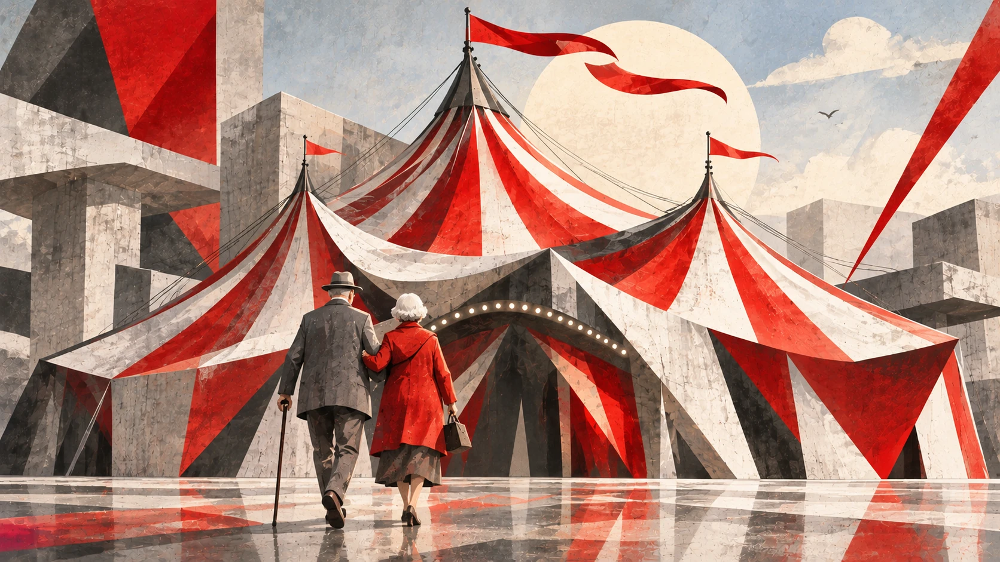
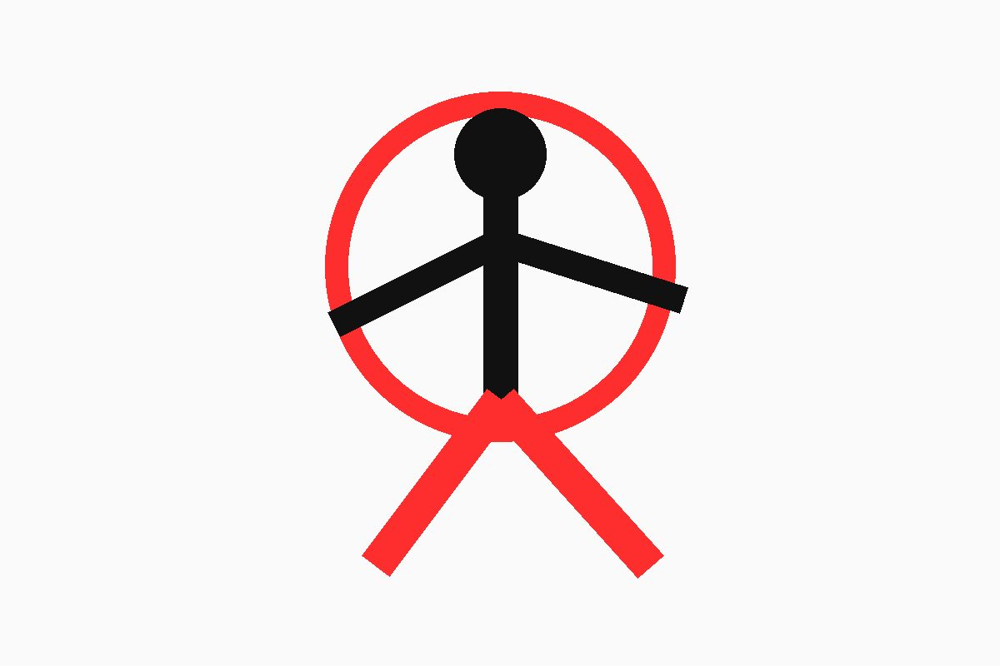

Staunen statt Alltag.
Akrobatik, Clownerie, Jonglage und Musik – abwechslungsreich, nahbar und mit viel Herz. Die Vorstellung richtet sich zuerst an Sie als Seniorinnen und Senioren; Enkelkinder sind herzlich willkommen.
Das Programm ansehen →HAMBURG · 12. JUNI 2027 · EINLASS AB 09:30 UHR
Liebe Seniorinnen und Senioren: Gönnen Sie sich einen Vormittag voller Staunen, Lachen und schöner Erinnerungen. Unsere Vorstellungen sind extra für Sie gemacht – in angenehmem Tempo, mit bequemen Sitzplätzen und einer Pause zum Durchatmen. Ihre Enkelkinder dürfen natürlich mit in die Manege!

EIN FEST FÜR DIE SINNE
Liebe Seniorinnen und Senioren, dieser Vormittag gehört Ihnen! Am Samstag, den 12. Juni 2027, verwandelt sich der Zirkusplatz am Hamburger Stadtpark in einen Ort voller überraschender Begegnungen. Kommen Sie allein, mit Freundinnen und Freunden oder bringen Sie Ihre Enkelkinder mit. Die Vorstellung ist auf Sie und Ihren Tagesrhythmus abgestimmt.
Wir möchten Ihnen einen entspannten und zugleich aufregenden Vormittag schenken. Freuen Sie sich auf klassische Zirkuskunst, zeitgenössische Artistik, Live-Musik und Humor. Die Sitzplätze sind nummeriert, Wege deutlich ausgeschildert und unser Team hilft Ihnen gerne weiter. Für Familien ist dieses Vormittagsangebot besonders schön, wenn die Enkelkinder oder andere Begleitpersonen Zeit haben.
Akrobatik, Clownerie, Jonglage und Musik – abwechslungsreich, nahbar und mit viel Herz. Die Vorstellung richtet sich zuerst an Sie als Seniorinnen und Senioren; Enkelkinder sind herzlich willkommen.
Das Programm ansehen →Sie stehen im Mittelpunkt. Wenn Ihre Enkelkinder oder eine Begleitperson mitkommen möchten, freuen wir uns natürlich ebenfalls. Eine ganze Familie ist willkommen, aber nicht Voraussetzung für einen schönen Zirkusvormittag.
Gut vorbereitet ankommen →. Einlass ab 09:30 Uhr am Zirkusplatz am Stadtpark, Saarlandstraße 71.
Anfahrt und Hinweise →
GEMEINSAM ERLEBEN
Vielleicht ist es der Moment, in dem eine Artistin scheinbar schwerelos durch den Ring schwebt. Vielleicht ein Lied, das Erinnerungen weckt. Oder das Lachen Ihres Enkelkindes neben Ihnen. Dieser Vormittag ist eine Einladung, gemeinsam etwas Besonderes zu erleben.
Wir möchten einen Ort schaffen, an dem niemand sich beeilen muss. Es gibt Pausen, Sitzplätze und verständliche Ansagen. Wer lieber nur einen Teil des Programms sehen möchte, kann das Gelände in Ruhe erkunden und jederzeit eine Pause einlegen.
Unsere Idee kennenlernenDIE MANEGE WARTET
Gönnen Sie sich eine schöne Auszeit am Vormittag. Bringen Sie gern Ihre Enkelkinder oder eine Begleitperson mit – wir freuen uns auf Sie!
Zum Ticketformular